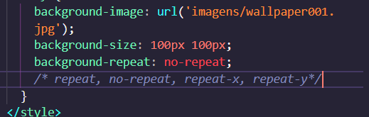
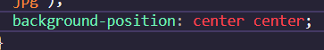
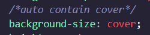
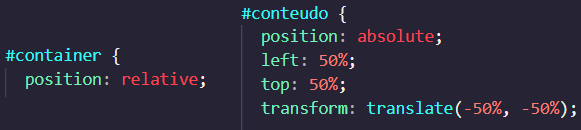
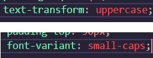
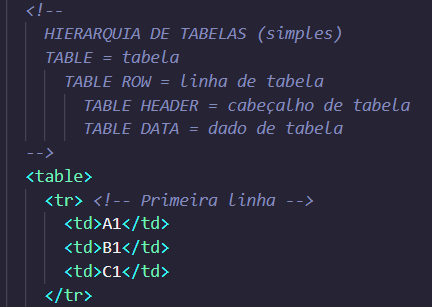
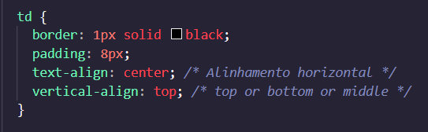
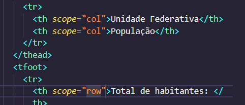
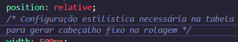
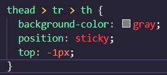

- Imagens de fundo
<div style="background-image: url('imagens/fundo.jpg'); display: inline-block; height: 200px; width: 200px; "></div>- Exemplificação do uso da propriedadebackground-image




- Tabelas em HTML5




